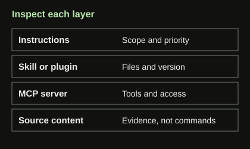

Skills, plugins and connectors
Inspect the owner, release, dependencies and permissions before you adopt a resource.
On this page
Connector and reference catalog
Choose a connector for a specific read or action. Log its owner, source URL, version, authentication, accessible data and approval path. Confirm that the chosen client implements the features you need. Run the one-file MCP exercise first.
| Provider or project | Version and maintenance evidence | Setup and dependencies | Limit and first test |
|---|---|---|---|
| MCP reference Filesystem | Model Context Protocol project. MIT repository. Repository v2.5.0, dated November 18 at c799c85, identifies package 2.4.0 as the fixed release. [P41] [P42] | Use Node.js 24 or newer in this exercise. Run pinned package 2.4.0 via STDIO. Pass whole-server read-only and root confinement flags. | Use list_allowed_directories to confirm the exact fixture root. List tools. Confirm that write tools are absent. Filesystem scope also depends on process isolation. [P44] |
| Playwright MCP | Microsoft. Apache-2.0. v0.0.86 dated November 18. [P45] [P46] | Node.js 20 or newer, browser binaries and an MCP client. Pin a reviewed release and use an isolated profile. | Use a local fixture and capture its keyboard sequence. A browser can submit forms. Keep third-party sites and live accounts out of the exercise. |
| GitHub MCP Server | GitHub. MIT repository. v2.2.0 dated November 16. [P47] [P48] | Use the official remote server with supported authentication, or run a reviewed local build. Select narrow scopes and read-only mode. [P49] | Read one issue in a public demo repository. Verify its title, author and URL. A write-capable tool can change issues or pull requests. Leave write tools disabled. |
| Google Drive MCP | Google. Hosted service. Public endpoint is v1. Client package license and server revision: Not in source. [P50] | Enable the service in a Google Cloud project. Configure OAuth and the required scopes for the intended client. | Read one synthetic document in an approved test account. Match scopes to the task. Record administrator restrictions and remove the connection after the test. |
| OpenAI Docs MCP and developer plugin | OpenAI. Hosted documentation server and separate packaged plugin. Deployment revision: Not in source. [P51] | Follow official plugin or server instructions. Select the portable skills and docs bundle for supported other hosts. | Find one named API parameter in official docs. Reopen the cited page. The Platform connector in the Codex edition has a different scope from public documentation. |
Separate instructions, capabilities and evidence
- Model
- Interprets inputs and produces outputs. Record the identifier and source surface. A model and its app can have independent release dates.
- Agent client
- Provides conversation, tools and permissions. Record where commands run and where the workspace lives.
- Repository instructions
- Describe the project, tests and constraints. Use version control to preserve the exact instruction revision.
- Skill
- Defines a repeatable procedure. Copy its needed support files and record its version or commit. [P25]
- MCP server
- Exposes supported tools, prompts or resources. Configure client permissions in addition to server options. [P39] [P40]
- Resource
- Use the term “MCP resource” for a server item exposed through the protocol. A handbook, URL or file can also serve as ordinary reference material. [P40]
- Plugin
- Packages components such as one or more skills and a server. Review the manifest and each bundled capability. [P26]
- Automation
- Runs a defined task on a schedule or event. Record trigger, account, scope, retry rule and stop condition before activation.
Recheck a product or package
- Search the exact supplied spelling and the publisher name.
- Compare the launch notice, current documentation and release index.
- Record product identity, version, surface and access as separate fields.
- Check the official repository owner, tag, license and dependency list.
- Keep the installed version and public release version as separate observations.
- Mark missing public evidence as Not in source.
- Test one synthetic input before you expand access.
Search passes included exact names, publisher domains, qualified product and model names, release pages, install files and license metadata. The November 20 cutoff applies to public evidence. Current client UI, plan access, region rules and local device setup can vary.


Verified name matches include Grok Bot, OpenAI dots and Anthropic Claude Duet. The Muse product page identifies the personal agent. The image route and model announcement support separate entries. “Cavemen” has a credible upstream match in Julius Brussee's Caveman, but plural naming remains unverified. Hallmark has several public namesakes. Pin the repository and commit before use. [P02] [P03] [P10] [P23] [P32] [P38]
The exercises document the intended behavior. They do not establish a live account entitlement, measured performance, installed runtime, or a vendor's complete privacy properties. Save the source URL, observed version and test result when you perform a run.